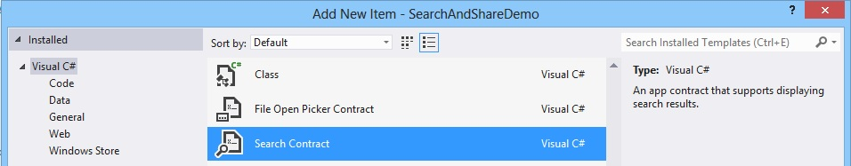

The easiest way to add searching to your app is to add a Visual Studio Search Contract item:
This will add an OnSearchActivated() method to App.xaml.cs.
Look for the frame.Navigate statement and change this to be the type of your actual results page (Visual Studio will add a default results page which may or may not be useful for your app's requirements).
protected async override void OnSearchActivated(SearchActivatedEventArgs args) { : : // Navigate to the search results page... frame.Navigate(typeof(MainPage), args.QueryText); : : }
Assuming you're not using the generated results page, modify your existing page's OnNavigatedTo() (if your page derives from the Page base class) or LoadState() method (if derived from LayoutAwarePage) to retrieve the search parameter that will be passed when the user invokes the Search charm:
protected override void OnNavigatedTo(NavigationEventArgs e) { if(e.Parameter != null && !string.IsNullOrEmpty(e.Parameter.ToString())) { // Page was opened to do a search var searchItem = e.Parameter.ToString(); } }
Or:
protected override void LoadState(Object navigationParameter, Dictionary<String, Object> pageState) { if (navigationParameter != null) { // Page was opened to do a search var searchItem = navigationParameter.ToString(); } }